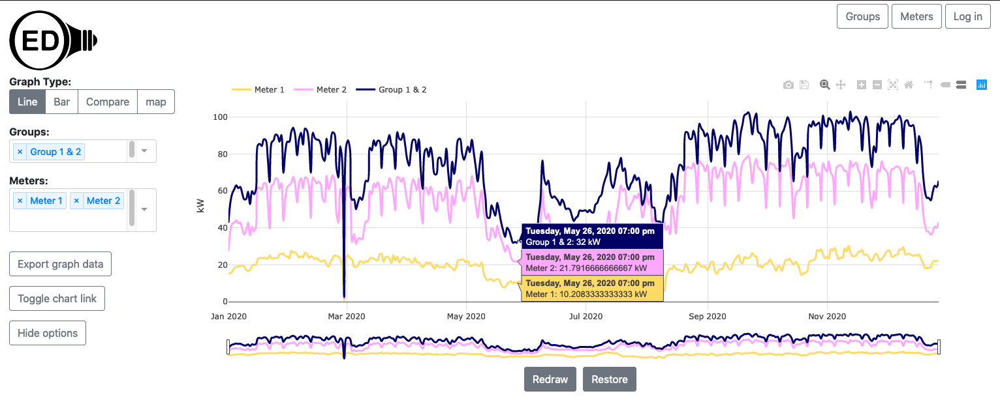
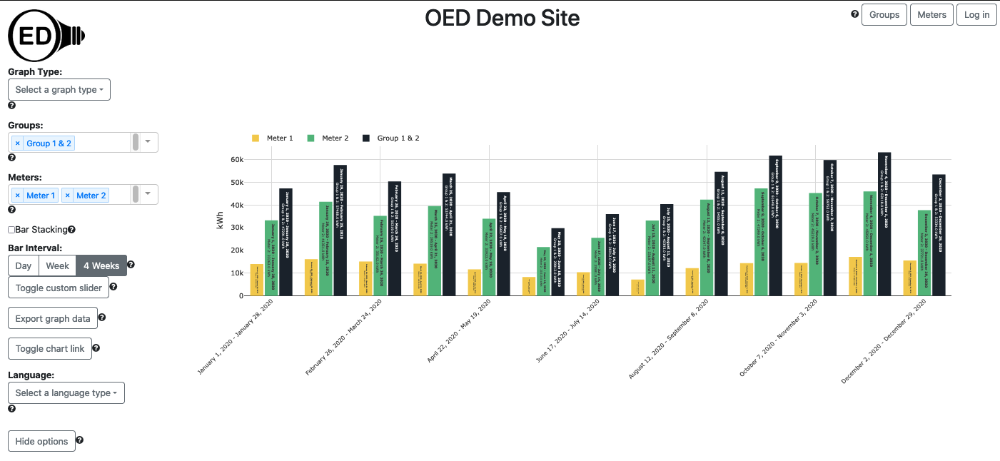
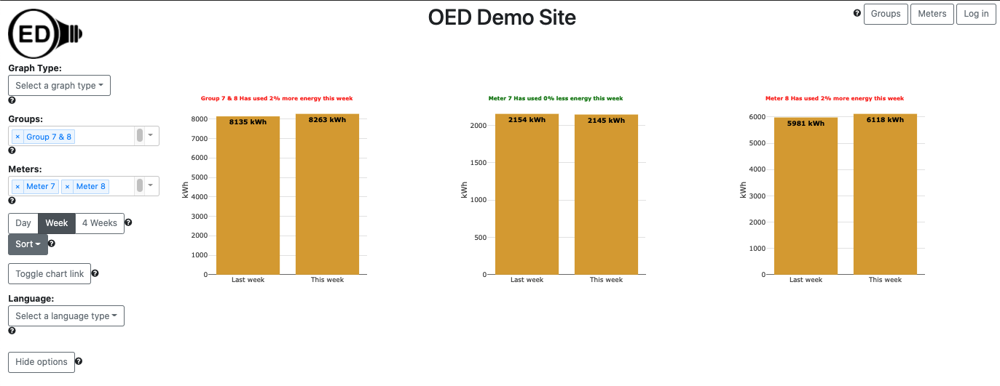
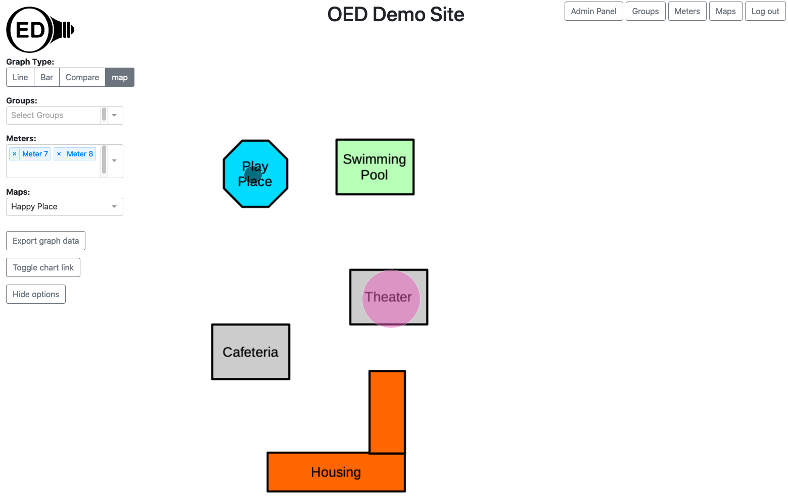

Features of the Open Energy Dashboard
The OED system has a number of features. This page gives a brief description of the feature along with a link to
the help pages with more information and pictures.
OED acquires, permanently stores and analyzes data it receives. While this is important in allowing OED to have
the features on this page, it is no normally visible to the user and is not discussed here. If you are
interested in how OED
does this work then please contact the project.
- OED has two types of items it displays in graphical representations of the data:
- Meters. A meter is generally a hardware device that provides
information on usage. For example, it might measure electrical usage or water consumption in a
building. OED aids the OED administrator in adding new meters and lets you control them via web
interfaces.
- Groups. A group represents the sum of data from other meters
or groups. For example, you could have a group with all the electrical meters for your organization
to get total electrical usage. This allows sites to combine data however they want. For example, a
college campus might have groups for each dorm, all dorms, athletic facilities, renewable
generation,
academic buildings,
etc. Since groups can contain groups, you could use the groups for each dorm to get the total
usage across all dorms rather than having to include all the meters again. The site administrator
can create any desired group via a web interface so each site can do this without needing external
help (or paying someone to do it). This is a unique and powerful feature of OED.
- Graphical display of data. OED currently provides four unique views of the
data. In each view you can pick any meters or groups you want to include.
- Line Graphic. Each meter/group is represented by a
line graph of usage versus time where you can control the time frame shown. An example is shown in
the
next figure where Meter 1 and Meter 2 are meter readings and Group 1 & 2 is a group that sums these
value which can be verified for one sample time point from the hover values shown on the graphic.

- Bar Graphic. Each meter/group is represented by a
series of bars over the total time chosen of the total usage over the chosen number of days for each
bar. An example of four weeks is shown in the next figure for the same meters/group for the line
graphic. Again the group is the sum of the two meters.

- Compare Graphic. Each meter/group is represented by its own
bar group comparing the current usage to the previous usage over day, week or four weeks. OED
supports sorting the graphs alphabetically and by how much they improved between the current and
previous time period. Typically this graphic is used to see how usage is changing and to compare
between different areas of an organization. For example, on a college campus you could run an energy
competition to see how each dorm is doing in saving energy. An example comparing the current week to
the previous week is shown in the next figure for the two meters from the line and bar graphics.

- Map Graphic. Each meter/group is represented by a
circle on a map where the size of the circle represents usage. This representation is useful in
getting a visual sense of how much energy different areas (often buildings) of an organization use.
A site can have as many maps as they wish and maps can overlap (for example, a larger map with the
entire organization and ones that zoom in on specific areas).
The site administrator can upload any graphical image of the organization and they use a web
interface to define GPS coordinates for all meters/groups. This requires no additional software nor
knowledge of GIS graphing. An example is shown in the following figure for the same two meters used
in the compare graphic above.

- Data Export. You can export the data of the line and bar graphics which
includes all meters and groups for the specified time frame of the graphic. This means you can use OED to
inspect the data, including its ability to sum data into groups, and if you decide you would like to work on
that data outside OED you simply click a button. This also gives you the ability to export all meter data
that resides in OED for a full
data dump. OED feels you should always have easy access to your data
from the web pages. After all, it is your data. OED believes in being open in many ways.
- Chart Links. Sometimes you want to post a specific graphic from OED so
others
can easily see it. For example, you might want to have a link on your website to let the public easily see
how you are reducing your energy usage. You also might want to easily get back a graphic that is interesting
and took time to produce. For any graphic, you can click a button to get a URL that you can either use as a
link in a website or put into the address bar in your web browser to recreate that graphic. While the same
graphic is reproduced, you are in a full featured version of OED so you can continue to interact with the
system as you wish.
- Hiding Options. OED is designed to work on any reasonable device from a
cell
phone to large monitor. If you are on a small screen or a monitor that is not interactive, you might want to
only have the graphics on the screen. You can hide the options normally shown on the page so they are docked
in the top, left corner where popup menu gives access to all the OED controls that were docked.
- OED provides help within the web pages that contain links to context sensitive help pages.
- Meter and Group Viewing. There is
a page to see details on meters and another for groups. This allows users to see information about the data
they are graphing. If you are an administrator of the site then you can use these pages to create new groups
and edit the
information for a meter or group.
- Tooltip help. OED has help throughout the web pages to give users
context sensitive help that is linked to the OED help web pages.
- Admin pages. OED believes that a non-IT person should be able to get a site
running
and control the site with just a web browser. OED provides web pages to control many aspects including meter
information, site language, default graphic shown and the site name. There are also features to allow admins
to input new meters and manually add meter data via a CSV file.
- OED has an interface that allows acquisition of data from many sources. At the current time we can
automatically accept data from Obvius
AcquiSuite, which can collect
data from many meter types, and MAMAC meters.
Release 0.8 will include
upload of files in CSV format to
add to a meter. This will allow for loading historical data as well as sending data from other devices where
the data can be placed in a CSV file. If the current methods for acquiring meter data do not meet your
needs, you can produce code to have OED accept the new meter format through our API or contact OED to see if
we will do the
necessary modifications.
- Easy site installation via the Docker containerized system. The automated installation process takes care of
all needed software. It also isolates OED from other software running on your system so it should not impact
other applications on your server.
- A site can change the default language displayed on all web pages. OED currently supports English, Spanish
(Latin American variation) and French. (Some newer parts, such as the help system, are awaiting translation
from English.) Any site wishing to add an additional language should contact us.
Once the list of phrases used is translated, we can easily include them in OED.
- OED has the ability to send the site administrator a regular email to inform them of any issues OED has
encountered including failures to acquire meter data.
- OED supports sites using HTTPS (encrypted) connections.
- Unlike some energy dashboards, OED is designed to allow users to interact with the data. If the dashboard
takes significant time to respond then the user will not want to use interactive features. OED has invested
significant effort in making the system very responsive by sophisticated data management techniques and
limiting network transfers.
- OED is based on modern, free, maintained and reliable software. This means OED will be a viable dashboard
for many years
to come while still supporting current and future computers, cell phones, etc.
- OED is constantly maintaining and enhancing our dashboard. We actively encourage any type of user to report
issues or ideas for enhancements to OED. We are driven by the user community and their input decides the
directions we go in.